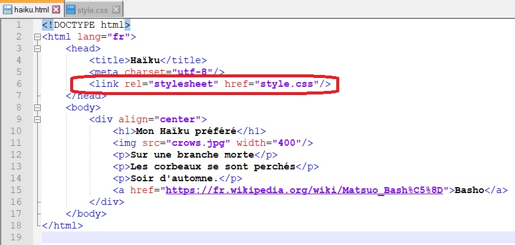
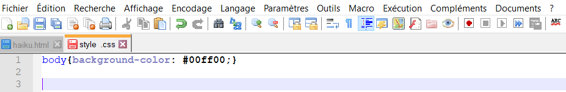
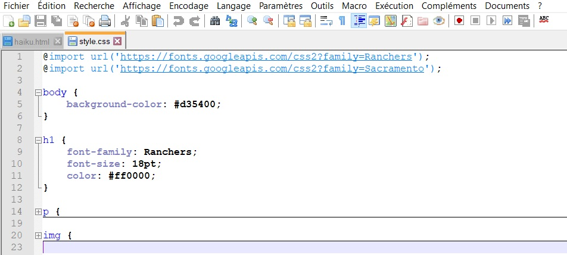
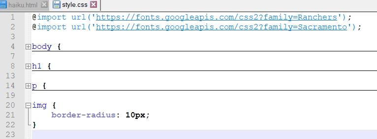

Exercice n°1
I. Préparation des fichiers
En allant dans le dossier SI-SNT (sur le bureau de votre PC), ouvrez le logiciel Notepad++ :

1) Dans le logiciel Notepad++ allez dans fichier et faites nouveau.
2) Allez dans langage et cliquer sur CSS.
3) Enregistrez ce fichier dans le même dossier que haiku.html sous le nom style.
4)Toujours sous Notepad++, ouvrez le fichier haiku.html
3) A la fin de l’en-tête du fichier haiku.html, ajouter la ligne qui indique au navigateur quel fichier CSS utiliser pour la mise en page comme ci-dessous :

II. Changement de la couleur d’arrière plan.
Répondez aux questions suivantes sur le document réponse : document réponse langage CSS exercice n°1
La couleur de l’arrière plan affecte toute la page web. C’est pourquoi cet attribut dépend de la balise<body>.
1) Ouvrez le fichier style.css avec le logiciel Notepad++ ajouter la ligne :

2) Ouvrir le fichier haiku.html avec un navigateur. De quelle couleur est l’arrière plan ?
3) Dans le fichier style.css modifier la ligne background-color: #00ff00 ;par background-color: #ff8888 puis actualiser la page haiku.html dans le navigateur (touche F5). De quelle couleur est l’arrière plan ?
4) A l’aide du site https://htmlcolorcodes.com/fr/, appliquer un arrière plan de couleur brun-orangé.
Complétez la phrase, dans le fichier CSS, j’ai écrit : ..........
III. Changement de la police du titre.
Le titre est contenu dans une baliseh1.
1) Au tout début du fichierstyle.css, ajouter les lignes :
@import url(’https://fonts.googleapis.com/css2?family=Ranchers’);
@import url(’https://fonts.googleapis.com/css2?family=Sacramento’);
Ces lignes permettent d’importer des polices fournies par Google.
2) Dans le fichier style.css ajouter les lignes :

3) Actualiser la page (F5) haiku.html pour visualiser les changements.
4) Ajouter au fichier style.css les lignes nécessaires pour que les paragraphes (p) soient en police Sacramento, en taille 24pt et en vert foncé.
IV Bordure arrondie de l’image :
1) Dans le fichier style.css ajouter les lignes :

2) Actualiser la page (F5) haiku.html pour visualiser les changements.
Créé avec HelpNDoc Personal Edition: Créer des livres électroniques facilement